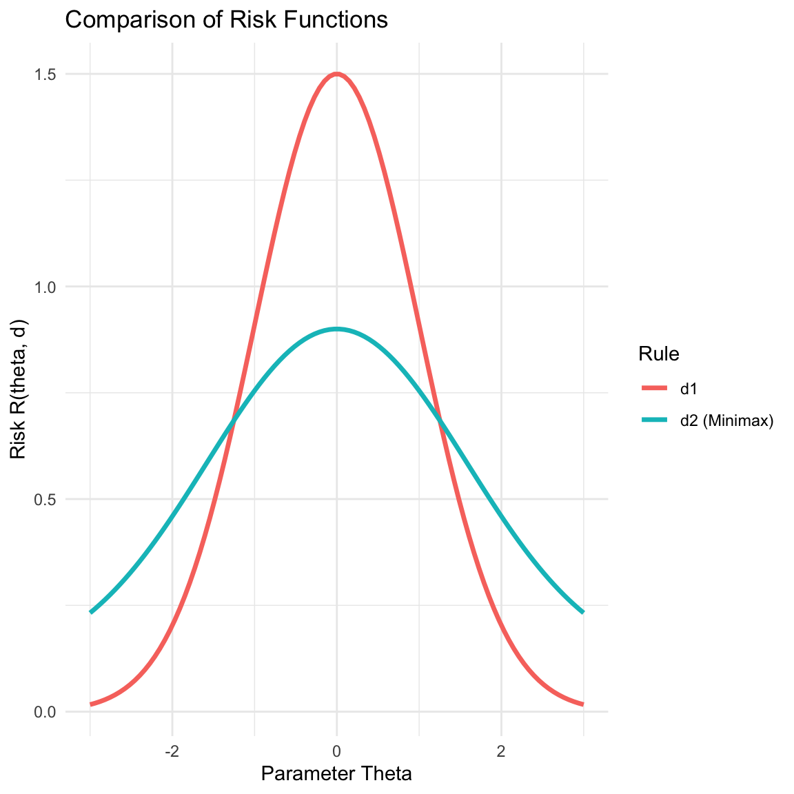

2 Decision Theory
2.1 Formulation of Decision Theory
In decision theory, we formalize the process of making decisions under uncertainty using the following components:
Parameter Space (\(\Theta\)): The set of all possible states of nature or values that the parameter can take. \(\theta \in \Theta\) (e.g., mean, variance).
Sample Space (\(\mathcal{X}\)): The space where the data \(X\) lies. Example: \(X = (X_1, X_2, \dots, X_n)\) where \(X_i \in \mathbb{R}\). So \(\mathcal{X} \in \mathbb{R}^n\).
Family of Probability Distributions: \(\{P_\theta(x) : \theta \in \Theta\}\). This describes how likely we are to see the data \(X\) given a specific parameter \(\theta\).
- If \(X\) is continuous: \(P_\theta(x) = f(x, \theta)\) (Probability Density Function).
- If \(X\) is discrete: \(P_\theta(x) = f(x, \theta)\) (Probability Mass Function).
Action Space (\(\mathcal{A}\)): The set of all actions or decisions available to the experimenter.
Loss Function: \(L: \Theta \times \mathcal{A} \rightarrow \mathbb{R}\). \(L(\theta, a)\) specifies the loss incurred if the true parameter is \(\theta\) and we take action \(a\). Generally, \(L(\theta, a) \ge 0\).
2.2 Decision Rules and Risk Functions
2.2.1 Decision Rule
A decision rule is a function \(d: \mathcal{X} \rightarrow \mathcal{A}\). It dictates the action \(d(x)\) we take when we observe data \(x\).
2.2.2 Risk Function
The risk function is the expected loss for a given decision rule \(d\) as a function of the parameter \(\theta\).
\[R(\theta, d) = E_\theta[L(\theta, d(X))]\]
- Continuous Case: \(R(\theta, d) = \int_{\mathcal{X}} L(\theta, d(x)) f(x, \theta) dx\)
- Discrete Case: \(R(\theta, d) = \sum_{x \in \mathcal{X}} L(\theta, d(x)) P_\theta(x)\)
2.3 Examples of Decision Problems
This section applies the definitions above to common statistical problems.
2.3.1 Example 1: Hypothesis Testing
We want to test \(H_0\) vs \(H_1\).
- Action Space: \(\mathcal{A} = \{0, 1\}\) where \(0\) means “Accept \(H_0\)” and \(1\) means “Reject \(H_0\)”.
- Loss Function (0-1 Loss): \[
L(\theta, a) =
\begin{cases}
0 & \text{if decision is correct} \\
1 & \text{if decision is wrong}
\end{cases}
\] Specifically:
- If \(\theta \in H_0\) and \(a=1\) (Type I Error), Loss = 1.
- If \(\theta \in H_1\) and \(a=0\) (Type II Error), Loss = 1.
- Decision Rule: A common rule is \(d(x) = 1\) if \(\bar{x} > c\), else \(0\).
- Risk Function:
- If \(\theta \in H_0\): \(R(\theta, d) = 1 \cdot P_\theta(d(X)=1) + 0 = P(\text{Type I Error})\).
- If \(\theta \in H_1\): \(R(\theta, d) = 1 \cdot P_\theta(d(X)=0) + 0 = P(\text{Type II Error})\).
2.3.2 Example 2: Point Estimation
We want to estimate a parameter \(\theta\).
- Action Space: \(\mathcal{A} = \Theta\). An action is an estimate of \(\theta\).
- Loss Function:
- Squared Error: \(L(\theta, a) = (\theta - a)^2\)
- Absolute Error: \(L(\theta, a) = |\theta - a|\)
- Decision Rule: A common rule is \(d(x) = \bar{x}\) (Sample mean).
- Risk Function (for Squared Error): \[R(\theta, d) = E_\theta[(\bar{x} - \theta)^2] = \text{MSE} = \text{Var}(\bar{x}) + \text{Bias}^2\]
2.3.3 Example 3: Interval Estimation
We want to estimate a range for the parameter.
- Action Space: \(\mathcal{A} = \{(l, u) : l \in \mathbb{R}, u \in \mathbb{R}, l \le u\}\).
2.4 Example: The Duchess and the Emerald Necklace
Scenario: You are the Duchess of Omnium. You have two necklaces: a priceless Real one and a valueless Imitation. They are indistinguishable to you. One is in the Left Drawer (Box 1), the other is in the Right Drawer (Box 2).
The Data (Great Aunt): You consult your Great Aunt. She inspects the Left Drawer first, then the Right. * If the Real necklace is in the Left (\(\theta_1\)): She identifies it correctly. (Infallible). * If the Real necklace is in the Right (\(\theta_2\)): She sees the fake first, gets confused, and guesses randomly (\(50/50\)). ## Formulation of the Decision Problem
2.4.1 Parameter Space (\(\Theta\))
The set of possible states of nature regarding the location of the real necklace:
- \(\theta_1\): The Real necklace is in the Left Drawer.
- \(\theta_2\): The Real necklace is in the Right Drawer.
2.4.2 Action Space (\(\mathcal{A}\))
The set of possible actions available to the Duchess:
- \(a_1\): Wear the Left necklace.
- \(a_2\): Wear the Right necklace.
2.4.3 The Data (\(X\))
The data consists of the Great Aunt’s judgment after inspecting the necklaces:
- \(X \in \{1, 2\}\)
- \(X=1\): Aunt says “Left is Real”.
- \(X=2\): Aunt says “Right is Real”.
2.4.4 Probability of Data Given Parameter (\(P_\theta(X)\))
The probability of the Aunt’s advice changes depending on the true state of nature (\(\theta\)).
| State | \(P(X=1 \mid \theta)\) | \(P(X=2 \mid \theta)\) |
|---|---|---|
| \(\theta_1\) (Real Left) | 1 | 0 |
| \(\theta_2\) (Real Right) | 0.5 | 0.5 |
2.4.5 Loss Function (\(L\))
The loss is defined as 0 for a correct choice and 1 (representing £1M) for an incorrect choice.
| State Action | \(a_1\) (Wear Left) | \(a_2\) (Wear Right) |
|---|---|---|
| \(\theta_1\) (Real Left) | 0 | 1 |
| \(\theta_2\) (Real Right) | 1 | 0 |
2.4.6 Decision Rules
There are four possible deterministic decision rules (\(d: \mathcal{X} \rightarrow \mathcal{A}\)).
| Rule | Description | Action if \(X=1\) (Left) | Action if \(X=2\) (Right) |
|---|---|---|---|
| \(d_1\) | Always Left | \(a_1\) | \(a_1\) |
| \(d_2\) | Always Right | \(a_2\) | \(a_2\) |
| \(d_3\) | Follow Aunt | \(a_1\) | \(a_2\) |
| \(d_4\) | Do Opposite | \(a_2\) | \(a_1\) |
2.4.7 Risk Calculation Tables
For each decision rule, the table below calculates the risk by summing the expected loss across possible outcomes (\(X\)) for both states of nature.
2.4.7.1 Rule \(d_1\) (Always Left)
| State | Component | Outcome \(X=1\) | Outcome \(X=2\) | Risk (Row Sum) |
|---|---|---|---|---|
| \(\theta_1\) | Action \(d_1(X)\) | \(a_1\) | \(a_1\) | |
| Loss \(L(\theta_1, d)\) | 0 | 0 | ||
| Prob \(P(X \mid \theta_1)\) | 1 | 0 | ||
| Product (\(L \times P\)) | 0 | 0 | Risk = 0 | |
| \(\theta_2\) | Action \(d_1(X)\) | \(a_1\) | \(a_1\) | |
| Loss \(L(\theta_2, d)\) | 1 | 1 | ||
| Prob \(P(X \mid \theta_2)\) | 0.5 | 0.5 | ||
| Product (\(L \times P\)) | 0.5 | 0.5 | Risk = 1 |
2.4.7.2 Rule \(d_2\) (Always Right)
| State | Component | Outcome \(X=1\) | Outcome \(X=2\) | Risk (Row Sum) |
|---|---|---|---|---|
| \(\theta_1\) | Action \(d_2(X)\) | \(a_2\) | \(a_2\) | |
| Loss \(L(\theta_1, d)\) | 1 | 1 | ||
| Prob \(P(X \mid \theta_1)\) | 1 | 0 | ||
| Product (\(L \times P\)) | 1 | 0 | Risk = 1 | |
| \(\theta_2\) | Action \(d_2(X)\) | \(a_2\) | \(a_2\) | |
| Loss \(L(\theta_2, d)\) | 0 | 0 | ||
| Prob \(P(X \mid \theta_2)\) | 0.5 | 0.5 | ||
| Product (\(L \times P\)) | 0 | 0 | Risk = 0 |
2.4.7.3 Rule \(d_3\) (Follow Aunt)
| State | Component | Outcome \(X=1\) | Outcome \(X=2\) | Risk (Row Sum) |
|---|---|---|---|---|
| \(\theta_1\) | Action \(d_3(X)\) | \(a_1\) | \(a_2\) | |
| Loss \(L(\theta_1, d)\) | 0 | 1 | ||
| Prob \(P(X \mid \theta_1)\) | 1 | 0 | ||
| Product (\(L \times P\)) | 0 | 0 | Risk = 0 | |
| \(\theta_2\) | Action \(d_3(X)\) | \(a_1\) | \(a_2\) | |
| Loss \(L(\theta_2, d)\) | 1 | 0 | ||
| Prob \(P(X \mid \theta_2)\) | 0.5 | 0.5 | ||
| Product (\(L \times P\)) | 0.5 | 0 | Risk = 0.5 |
2.4.7.4 Rule \(d_4\) (Do Opposite)
| State | Component | Outcome \(X=1\) | Outcome \(X=2\) | Risk (Row Sum) |
|---|---|---|---|---|
| \(\theta_1\) | Action \(d_4(X)\) | \(a_2\) | \(a_1\) | |
| Loss \(L(\theta_1, d)\) | 1 | 0 | ||
| Prob \(P(X \mid \theta_1)\) | 1 | 0 | ||
| Product (\(L \times P\)) | 1 | 0 | Risk = 1 | |
| \(\theta_2\) | Action \(d_4(X)\) | \(a_2\) | \(a_1\) | |
| Loss \(L(\theta_2, d)\) | 0 | 1 | ||
| Prob \(P(X \mid \theta_2)\) | 0.5 | 0.5 | ||
| Product (\(L \times P\)) | 0 | 0.5 | Risk = 0.5 |
2.5 Comparing Decision Rules
We typically do not have a single rule \(d\) that is better than all other rules for all \(\theta\).
- \(d\) strictly dominates \(d'\) if \(R(\theta, d) \le R(\theta, d')\) for all \(\theta\), with strict inequality for at least one \(\theta\).
- Admissibility: A decision rule \(d\) is admissible if it is not dominated by any other rule. If it is dominated, it is inadmissible.
2.5.1 Minimax Principle
A rule \(d\) is Minimax if it minimizes the maximum possible risk.
\[\sup_{\theta} R(\theta, d) \le \sup_{\theta} R(\theta, d') \quad \text{for all } d' \in \mathcal{D}\]
Visualize the risk functions of two rules, \(d_1\) and \(d_2\). \(d_2\) might have a higher risk in some areas but a lower “peak” risk, making it Minimax.
2.6 Bayes Decision Rules
We specify a prior distribution \(\pi(\theta)\) on the parameter space \(\Theta\).
2.6.1 Bayes Risk
The Bayes risk of a rule \(d\) with respect to prior \(\pi\) is the weighted average of the frequentist risk:
\[r(\pi, d) = E_\pi [R(\theta, d)] = \int_\Theta R(\theta, d) \pi(\theta) d\theta\]
2.6.2 Bayes Rule Definition
A decision rule \(d_\pi\) is a Bayes rule with respect to \(\pi\) if it minimizes the Bayes risk:
\[r(\pi, d_\pi) = \inf_{d' \in \mathcal{D}} r(\pi, d')\]
2.7 Randomized Decision Rules & Risk Sets
2.7.1 Randomized Rules
A randomized decision rule chooses between deterministic rules \(d_1, d_2, \dots\) with probabilities \(p_1, p_2, \dots\). The risk of a randomized rule \(d^* = \sum p_i d_i\) is the linear combination of their risks: \[R(\theta, d^*) = \sum p_i R(\theta, d_i)\]
2.7.2 Geometric Interpretation (Finite Parameter Space)
If \(\Theta = \{\theta_1, \theta_2, \dots, \theta_k\}\) is finite, we can plot the risk vector \((R(\theta_1, d), \dots, R(\theta_k, d))\) in \(\mathbb{R}^k\).
Risk Set (\(S\)): The set of all possible risk vectors. Lemma: The Risk Set \(S\) is convex. This is because we can form randomized rules that lie on the line segment connecting any two deterministic rules.

2.8 Theorems relating Minimax and Bayes
Theorem 2.1: If a sequence of Bayes rules \(\delta_n\) (w.r.t priors \(\pi_n\)) has Bayes risk converging to \(C\), and \(R(\theta, \delta_0) \le C\) for all \(\theta\), then \(\delta_0\) is Minimax.
Theorem 2.2 (Equalizer Rule): An “Extended Bayes” rule that is an equalizer rule (constant risk across \(\theta\)) must be Minimax. Proof sketch: If it were not minimax, there would exist a rule with strictly lower maximum risk. This would imply it has lower Bayes risk for the specific prior, leading to a contradiction with the assumption that the original rule was Bayes.
Theorem 2.3
Assume that the parameter space \(\Theta = \{\theta_1, \dots, \theta_t\}\) is finite, and that the prior \(\pi(\theta)\) gives positive probability to each \(\theta_i\). Then, a Bayes rule with respect to \(\pi\) is admissible.
Theorem 2.4
If a Bayes rule is unique, it is admissible.
Theorem 2.5
Let \(\Theta\) be a subset of the real line. 1. Assume that the risk functions \(R(\theta, d)\) are continuous in \(\theta\) for all decision rules \(d\). 2. Suppose that for any \(\theta\) and any \(\epsilon > 0\), the interval \((\theta - \epsilon, \theta + \epsilon)\) has positive probability under the prior \(\pi(\theta)\).
Then, a Bayes rule with respect to \(\pi\) is admissible.